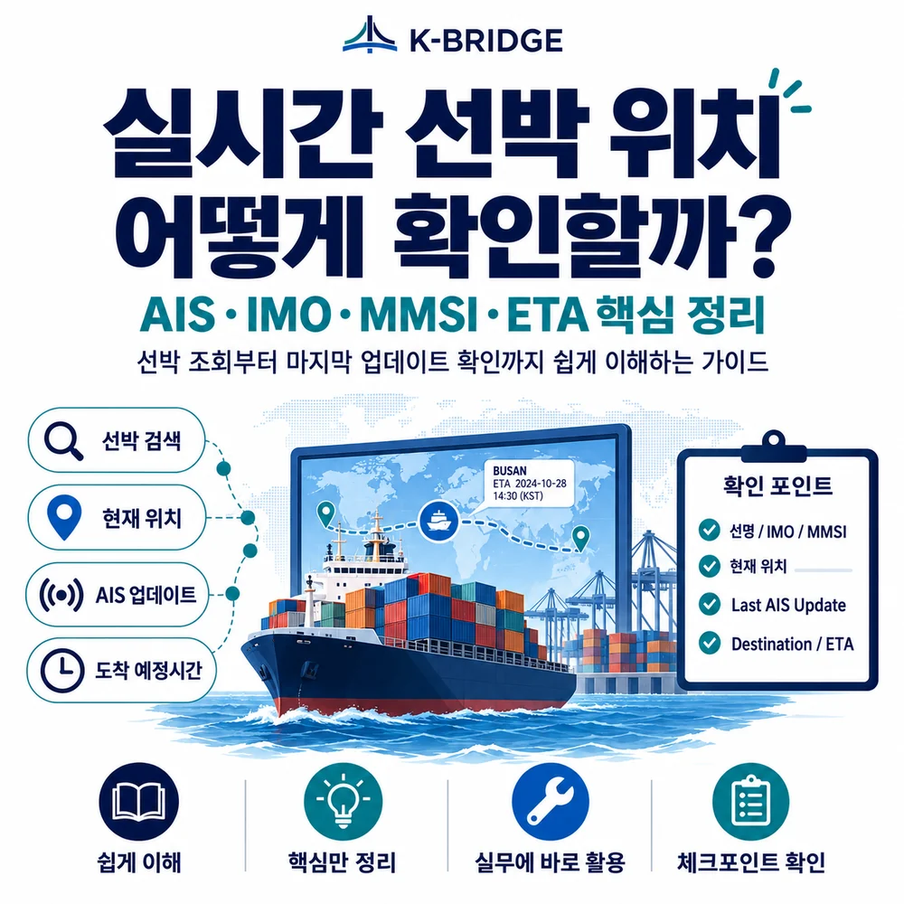
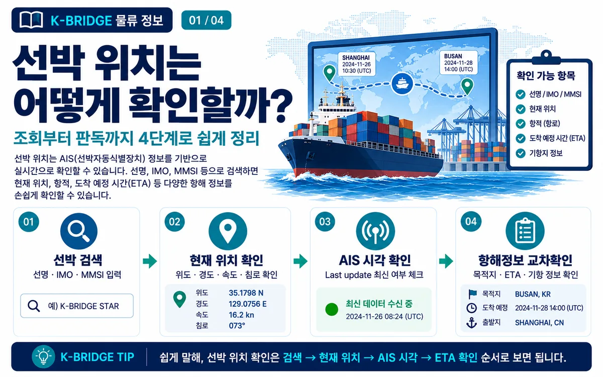
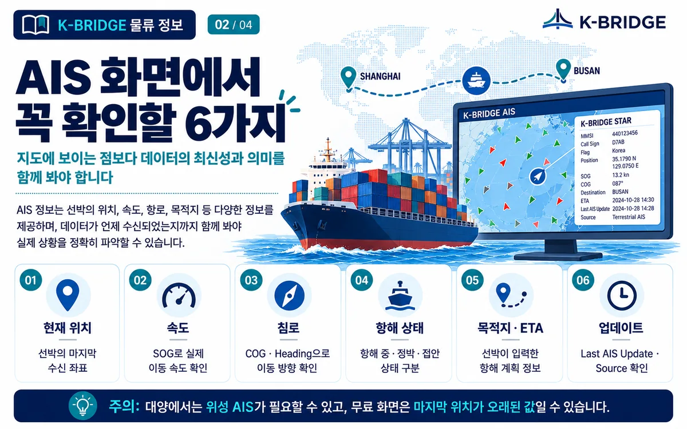
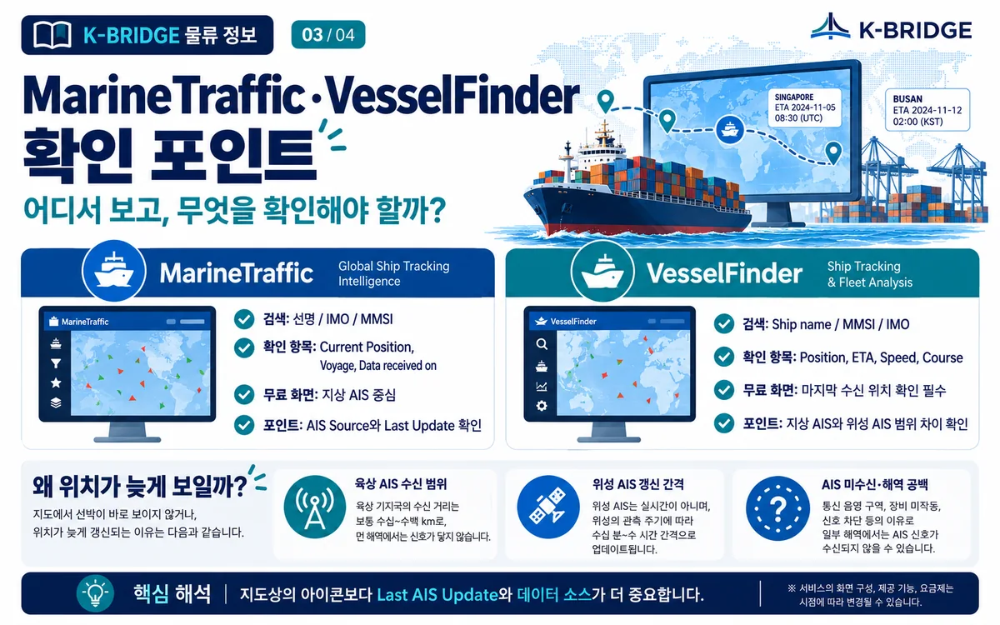
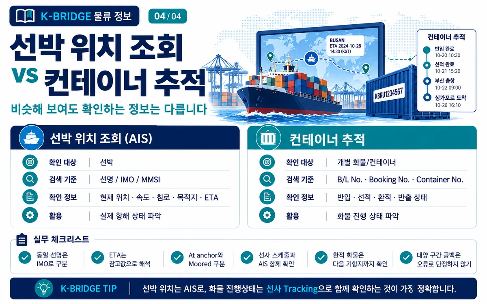

핵심 요약
선박 위치를 가장 빠르게 확인하는 방법은 AIS 지도에서 선명, IMO 번호 또는 MMSI를 검색하는 것입니다. 다만 지도상의 아이콘만 보고 현재 위치라고 단정하면 안 됩니다. Last AIS Update와 AIS Source를 함께 확인해야 데이터가 얼마나 최신인지 판단할 수 있습니다.
1. AIS로 선박 위치를 보는 원리
AIS(Automatic Identification System)는 선박이 자신의 식별정보와 위치·속도·침로·항해상태 등을 무선으로 송신하고 주변 선박과 육상국, 위성 수신망이 이를 받아 활용하는 시스템입니다.
Class A AIS는 항해 중 선속과 침로 변화에 따라 수 초 단위로 위치보고를 송신할 수 있고, 정박 중에는 송신 간격이 길어집니다. 하지만 우리가 웹에서 보는 위치는 해당 신호가 서비스에 마지막으로 수신된 시점의 위치입니다. 따라서 “실시간 선박 위치”를 볼 때는 좌표보다 먼저 마지막 수신 시각을 확인하는 습관이 중요합니다.

2. 선박 위치 확인은 4단계면 충분합니다
| 단계 | 확인 내용 | 실무 포인트 |
|---|---|---|
| 1. 선박 검색 | 선명, IMO 번호, MMSI | 동일·유사 선명이 있으므로 IMO를 함께 확인 |
| 2. 현재 위치 | 위도·경도, SOG, COG | 움직이는지, 어느 방향으로 가는지 확인 |
| 3. AIS 시각 | Last AIS Update, Data received on | 오래된 위치인지 최신 위치인지 판단 |
| 4. 항해정보 | Destination, ETA, Port Call | 선사 스케줄과 교차확인 |
IMO 번호는 선박 자체를 식별하는 데 유용하고, MMSI는 AIS 통신에서 사용하는 식별번호입니다. 선명만으로 검색하기보다 IMO 번호를 함께 확인하면 잘못된 선박을 보는 실수를 줄일 수 있습니다.

3. AIS 화면에서 꼭 확인할 6가지
AIS 지도에서는 선박 아이콘 하나보다 위치·속도·침로·항해상태·목적지·업데이트 시각을 묶어서 해석해야 합니다.
| 항목 | 뜻 | 실무 해석 |
|---|---|---|
| Position | 마지막 수신 좌표 | 좌표와 Last AIS Update를 함께 확인 |
| SOG | Speed Over Ground | 지면 기준 실제 이동속도 |
| COG / Heading | 이동 침로 / 선수 방향 | 선박이 향하는 방향과 실제 이동 방향 비교 |
| Navigation Status | 항해상태 | Under way, At anchor, Moored 등을 구분 |
| Destination / ETA | 목적지 / 예상도착 | 선박 입력 정보이므로 실제 일정과 차이 가능 |
| Last AIS Update / Source | 마지막 수신시각 / 데이터 소스 | Terrestrial·Satellite·Roaming 여부로 최신성 판단 |

4. MarineTraffic·VesselFinder에서는 무엇을 확인해야 할까?
MarineTraffic
Live Map이나 검색 결과에서 선박을 선택하면 Vessel Details 화면에서 Current position, Current voyage, Port calls, IMO·MMSI 등 선박정보를 확인할 수 있습니다. Current position에는 좌표와 함께 AIS data source와 수신 시각이 표시되므로, 현재 위치를 판단할 때 가장 먼저 확인하는 것이 좋습니다.
- 검색: 선명, IMO, MMSI로 대상 선박을 찾습니다.
- Current position: 위도·경도와 Data received on을 확인합니다.
- AIS source: Terrestrial, Satellite, Roaming 여부를 확인합니다.
- Current voyage: 출발·도착, 속도, 침로, 흘수 등의 항해정보를 확인합니다.
VesselFinder
VesselFinder의 선박 데이터베이스는 Ship name / MMSI / IMO로 검색할 수 있습니다. 대양에서 최신 위치를 확인할 때는 지상 AIS만 보이는 화면인지, 위성 AIS까지 포함된 플랜인지 구분해야 합니다.
서비스별 무료·유료 범위와 위성 AIS 제공 방식은 변경될 수 있습니다. 화면의 “실시간” 문구보다 마지막 수신 위치와 시각을 확인하는 것이 중요합니다.
5. 왜 ‘실시간’인데 선박 위치가 늦게 보일까요?
연안과 항만에서는 육상 AIS 수신국이 선박 신호를 자주 받을 수 있지만, 대양으로 나가면 육상 수신 범위를 벗어나 위성 AIS가 필요할 수 있습니다. 위성 AIS는 원격 해역을 커버할 수 있지만 서비스와 수신 환경에 따라 업데이트 간격이 길어질 수 있습니다.
- 육상 수신 범위 밖: 해안 기지국에서 멀어진 선박은 지상 AIS 데이터가 끊길 수 있습니다.
- 위성 AIS 갱신 간격: 대양 데이터는 연안보다 수신·반영 간격이 길 수 있습니다.
- AIS 미수신: 통신 음영, 장비 문제, 전원·설정 상태 등으로 일시적 공백이 발생할 수 있습니다.
- 무료 화면 제한: 서비스에 따라 위성 위치가 유료 기능으로 제공될 수 있습니다.
실무 해석
“마지막 위치가 8시간 전”이라는 표시가 선박이 8시간 동안 움직이지 않았다는 뜻은 아닙니다. 최신 AIS 신호가 해당 서비스에 아직 들어오지 않았을 수 있으므로, Last AIS Update와 Source를 먼저 확인해야 합니다.

6. 선박 위치 조회와 컨테이너 추적은 다릅니다
AIS는 선박의 위치와 항해상태를 확인하는 시스템입니다. 내가 수출입하는 컨테이너가 실제로 해당 선박에 실렸는지, 환적됐는지, 터미널에 반입·반출됐는지는 AIS만으로 확인할 수 없습니다.
| 구분 | 선박 위치 조회 | 컨테이너 추적 |
|---|---|---|
| 확인 대상 | 선박 | 개별 화물·컨테이너 |
| 검색 기준 | 선명 / IMO / MMSI | B/L No. / Booking No. / Container No. |
| 확인 정보 | 현재 위치·속도·침로·목적지·ETA | 반입·선적·환적·반출 상태 |
| 주요 활용 | 실제 항해 상태 파악 | 화물 진행 상태 파악 |
실무에서는 선사 Tracking으로 컨테이너 상태를 확인하고, AIS로 실제 선박의 움직임을 교차 확인하는 방식이 가장 효율적입니다.
7. 수출입 실무 체크리스트
- 동일·유사 선명은 IMO 번호로 구분합니다.
- ETA는 확정값이 아니라 참고값으로 보고 기상·항만 혼잡·대기상태를 함께 확인합니다.
- At anchor와 Moored를 구분합니다. 항만 앞 정박 대기와 실제 접안은 의미가 다릅니다.
- 선사 스케줄과 AIS를 함께 확인합니다. 선사 스케줄은 상업 일정, AIS는 실제 항해 상태를 보여줍니다.
- 환적 화물은 1차선·2차선 선명과 다음 기항지까지 확인합니다.
- 대양 구간의 위치 공백을 곧바로 오류로 단정하지 않습니다. 마지막 수신 시각과 데이터 소스를 확인합니다.
8. 자주 묻는 질문
Q. 선박 이름만 알아도 위치를 찾을 수 있나요?
Q. AIS 지도에 표시된 위치는 완전한 실시간인가요?
Q. IMO 번호와 MMSI 중 무엇으로 검색하는 것이 좋나요?
Q. ETA는 실제 도착시간과 항상 같은가요?
Q. 컨테이너 위치도 AIS에서 확인할 수 있나요?
Q. 대양에서 선박 위치가 몇 시간째 갱신되지 않으면 문제가 생긴 건가요?
선박 위치와 실제 선적 스케줄을 함께 확인하세요
케이브릿지 물류도구에서 실시간 선박 위치를 확인하거나, 실제 선적 건의 선박·환적·ETA·도착 일정이 필요하면 운송정보와 함께 검토해드립니다.